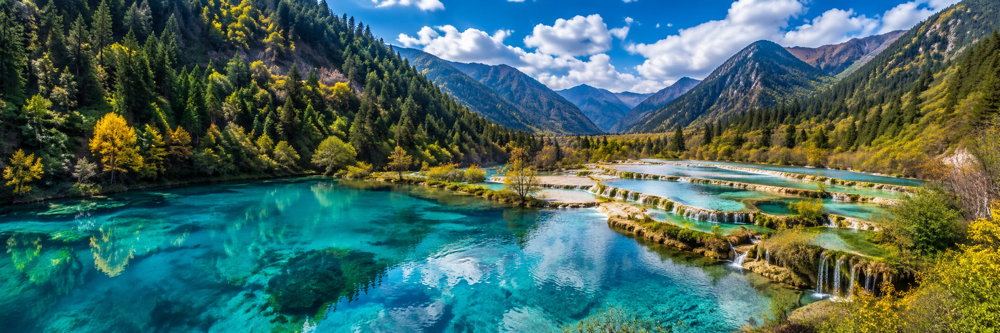
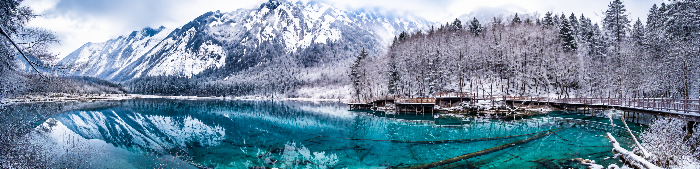

最佳季节、路线与避坑指南——秋季的九寨沟是色彩的海洋。
如果说中国只有一个地方的秋天称得上"童话世界"，那一定是九寨沟。每年10月中旬到11月初，沟内的枫树、桦树、落叶松集体变色——翠绿、金黄、橙红、深紫，层层叠叠地倒映在碧蓝色的海子里。相机随便一拍都是壁纸，这句话在九寨沟不是夸张。

10月15日—11月5日是秋色最浓的窗口期，也是人最多的时段。如果追求性价比，9月下旬秋色初现、人少房多；如果想看雪景，12月—2月的九寨沟银装素裹，另有一番意境。夏季（7—8月）是雨季，虽然水量充沛但山路偶有塌方，不太推荐。春季（4—5月）水位偏低，但野花盛开。
划重点：国庆黄金周（10.1—10.7）人流量爆表，建议避开。如果只能国庆去，务必提前一个月预订住宿和门票。

路线一：一日精华游（适合时间紧）
景区入口 → 坐观光车直达日则沟原始森林 → 箭竹海 → 熊猫海 → 五花海（九寨沟的颜值担当）→ 珍珠滩瀑布 → 诺日朗中心站午餐 → 则查洼沟长海 → 五彩池 → 树正沟犀牛海 → 老虎海 → 树正瀑布 → 出沟
路线二：两日深度游（推荐）
Day1：日则沟 + 则查洼沟（如上）
Day2：树正沟慢走——从盆景滩开始沿着栈道徒步到诺日朗瀑布，全程约7公里，一步一景，中午在树正寨吃藏式火锅
路线三：摄影专线（适合摄影爱好者）
早上第一批入园（7:30），趁人少直奔镜海拍倒影（无风时水面如镜）→ 五花海拍水底钙华 → 下午去长海拍雪山倒影 → 傍晚在树正群海拍暮色
1. 不要住在沟口拉客的"藏家乐"，很多没有正规资质且卫生堪忧。建议住漳扎镇（距沟口3公里，酒店多、价格透明）或沟内树正寨（需提前联系寨内民宿，但可省一天门票）。
2. 景区餐厅贵且难吃，诺日朗中心站盒饭68元起，建议自带干粮。
3. 不要触摸海子里的水，钙华地貌极其脆弱，水质一旦被污染需要几十年恢复。
4. 栈道上不要走得太急，海拔2000—3000米，体力消耗比平原大。
5. 跟团游注意购物陷阱，低价团通常会拉去购物点，建议自由行或报纯玩团。
漳扎镇是离景区最近的住宿聚集地，从快捷酒店到五星级都有。推荐住沟口附近的酒店，步行即可到景区大门，省去排队等摆渡车的麻烦。如果预算充足，九寨天堂洲际（距沟口约25公里）本身就是一景。如果想体验藏式风情，树正寨内的民宿是独特选择——晚上游客散尽后，整个九寨沟都是你的。